6 participants
Remote interviews and surveys, each with 10 questions.
A mobile shopping experience for modern, affordable fashion—with clearer sizing and simpler returns and exchanges.
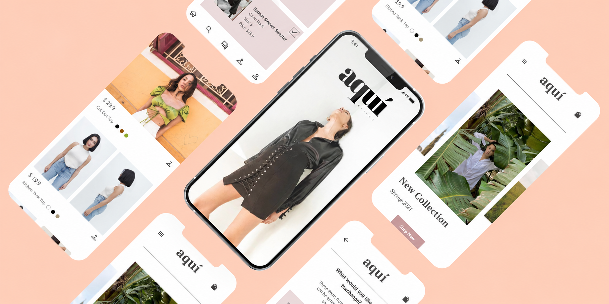
People enjoy shopping online, but inconvenient returns and exchanges create friction for customers and businesses. Shoppers want clothes that fit; businesses want to reduce returns while helping people discover products they love.
I explored what would make returns and exchanges quick and simple, how to recommend other products during an exchange, and how to help users choose the right size in the first place.
“Customers should be able to accurately determine what size would fit based on the information we provide … it shouldn't be difficult for them to return and exchange similar things.”Elissa Hassan · Founder of Aqui Beirut
I conducted research with a friend and five of her friends to understand the main concerns and inconveniences of buying clothes online. The process combined stakeholder and participant interviews, observation, surveys, personas, competitive analysis, and iterative prototyping.
Remote interviews and surveys, each with 10 questions.
Remote observation sessions involving around eight tasks.
Research focused on fit, product information, and the clarity of returns and exchanges.
“I feel unsure about the size, and I think returning it is kind of annoying so I always ended up not buying anything.”Research participant
Participants wanted similar items within the exchange journey, more useful size guidance, convenient return packaging, and clearer fabric-care instructions. Some also described the value of discounts when deciding between products.
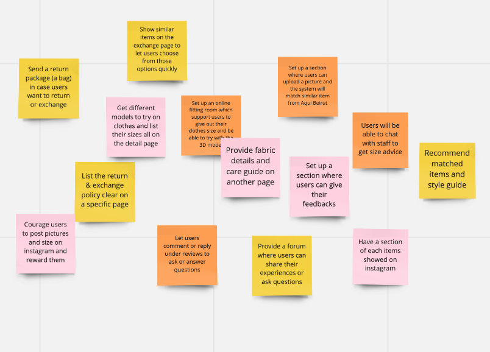
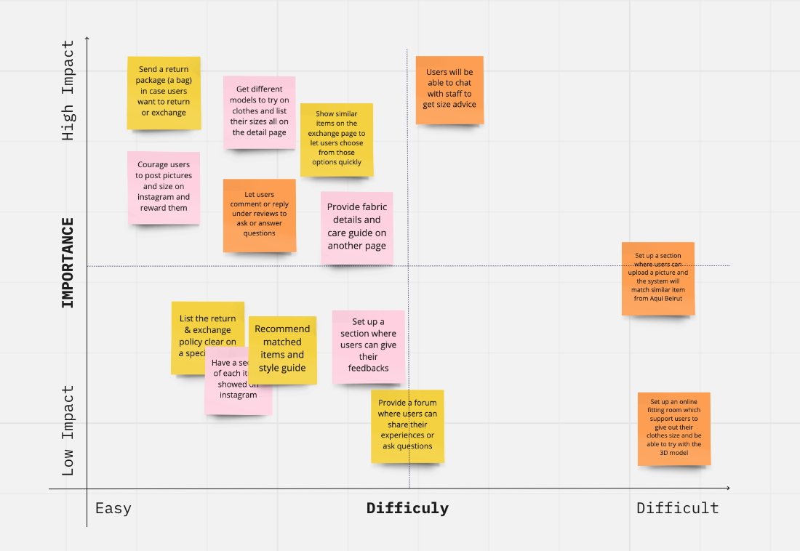
A married human resources manager earning $7,000 a month, Sara shops for work and social occasions. Design, quality, and service matter more than price. Uncertain sizing and sending back ill-fitting clothes frustrate her.
A student with a part-time income of $15 an hour, Pamela looks for good deals and distinctive designs. Complicated returns leave her with unworn purchases, and inconsistent size guides make oversized fits difficult to judge.
I mapped the ideal journey from exploring the homepage to checking product details and completing checkout. Interest in the designs could turn into anxiety over fit and policies; complete information and relevant recommendations could restore confidence.
Browse the homepage, categories, styles, and featured items.
Review details, sizing, similar items, and return and exchange policies.
Add to the shopping bag and check out with clear expectations.
Users did not want to spend an hour deciding which size to buy. They wanted complete details, plain-language policies, and essential information close at hand. The goal became a well-structured product page, a convenient size guide, and an understandable return and exchange process.
After brainstorming, I assessed ideas for feasibility, sketched a sitemap, and created early mockups around the crucial actions and features.
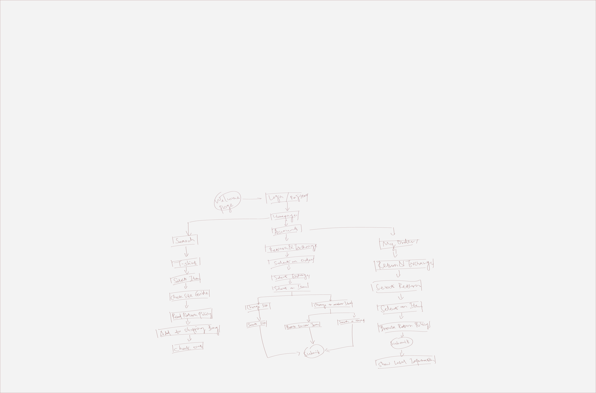
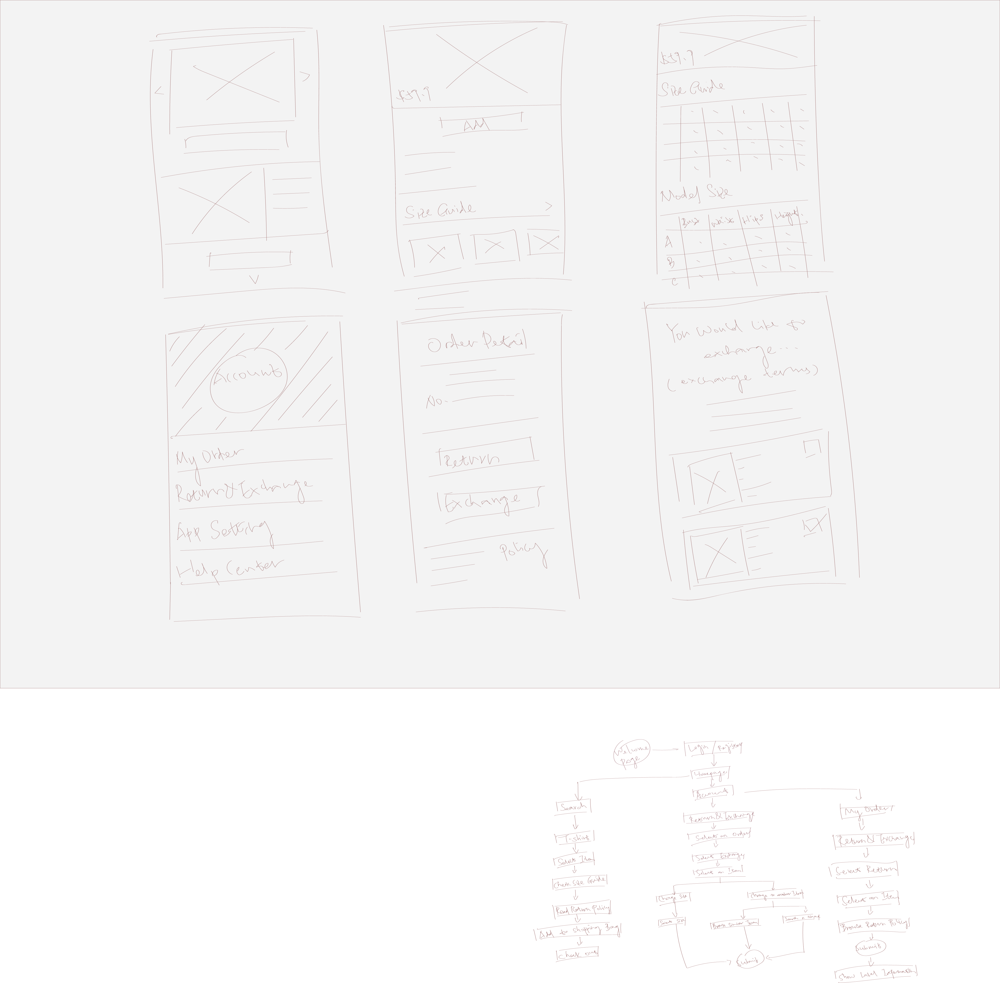
Through discussion and iteration, we aligned on colors, features, and actions. The clickable prototype explored size guidance and return and exchange options for different needs.
A simple logo and fashion image introduce the brand. Customers can create an account or sign in.
New arrivals and collections lead the homepage, with access to the shopping bag, search, chat, favorites, and account.
Product pages include fabric and care information, shipping details, policies, and access to staff through chat.
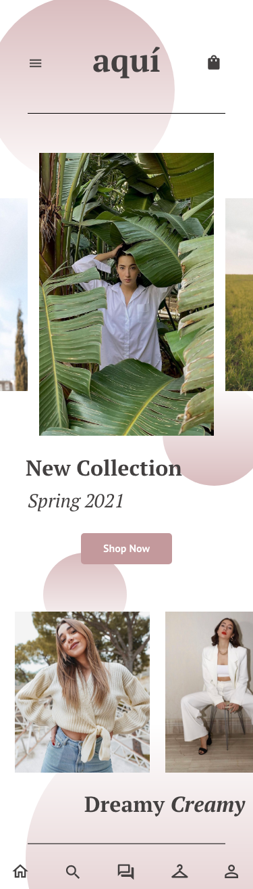
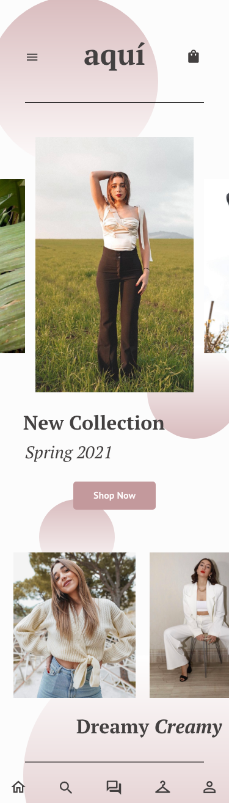
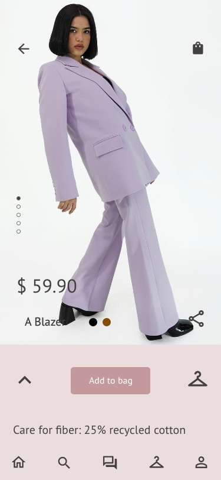
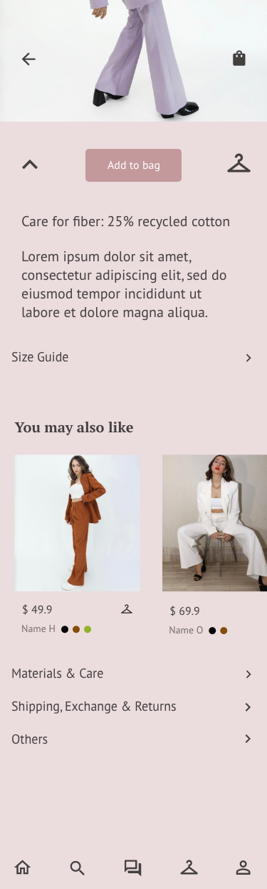
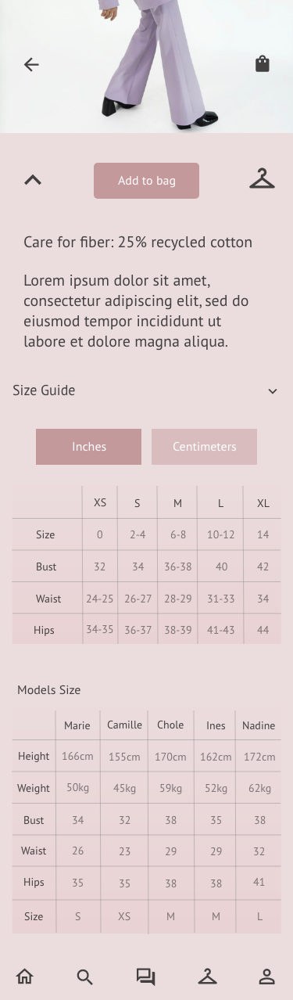
Order details provide access to order status, returns, and exchanges. Customers can select an item, choose a suggested replacement, or search for a different one. To keep the pages clean, I removed the decorative dots while retaining dark pink accents on selected features.
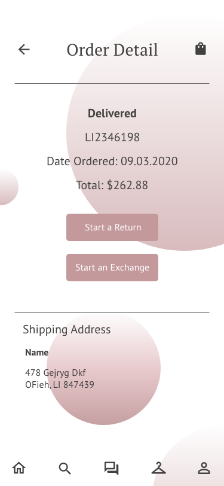
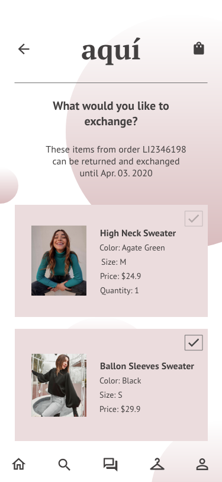
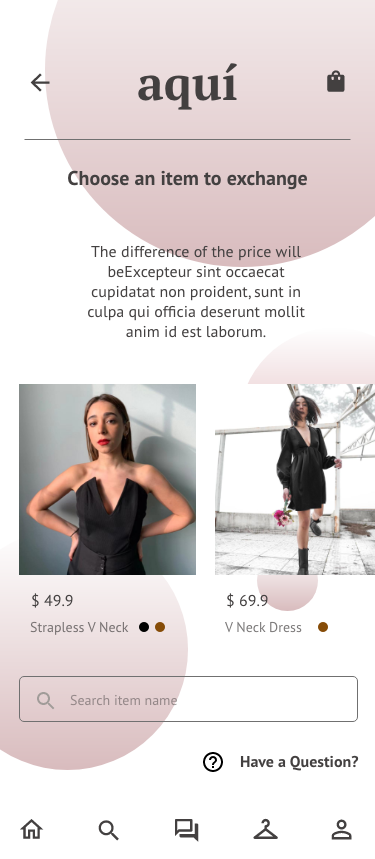
Aqui Beirut gave me the opportunity to apply what I had learned, develop an app through research and iteration, and practice thinking from the user’s perspective. There is still more to discover, particularly around making sizing and post-purchase service easier to understand.
Project content and original design assets from my original Aqui Beirut case study ↗.